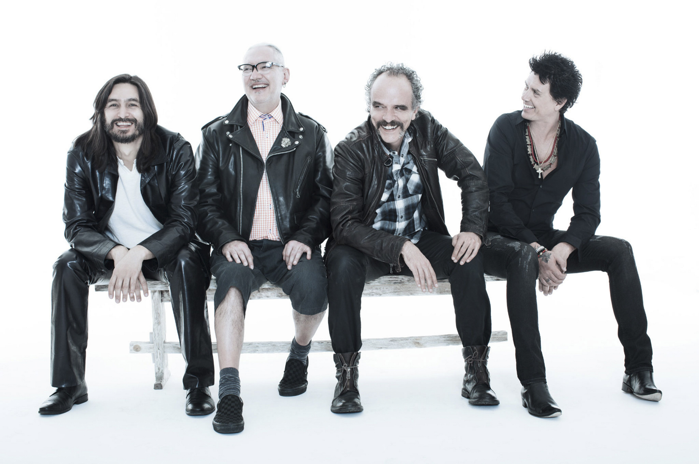

Espinosa Aguilar Angel Rafael
Calle rovirosa, numero 6, Chalco, Edo. México
16 años
Esta es mi primera pagina de texto, creada mediante el lenguaje html que es el lenguaje universal estándar utilizado en la web, para representar la información a travez de documentos de hípertexto.
El lenguaje html, utiliza una serie de etiquetas que le indican al navegador de internet, cómo interpretar y dar formato al texto que las acompaña.
Html nos brínda una serie de etiquetas para poder insertar varios elementos en nuestras páginas web, tales como imagenes, animaciones, peliculas, musica, etc.
Inclusive fórmulas matemáticas como: X^4 + 2X^5 = 0
O fórmulas quiemicas como: H2O + 2H2O - H2O
Tabla con imagenes, vinculo y video| Bandas Mexicanas | ||||
| Nombre de la banda | Integrantes | Resumen | Video ejemplo, de su musica | Mas de su historia |
| Caifanes | Saúl Hernández, Sabo Romo, Alejandro Marcovich, Alfonso Andre, Diego Herrera, Yann Zaragoza, Juan Carlos Novelo y Santiago Ojeda | Saúl Hernández junto con Diego Herrera estaban planeando un proyecto musical al que denominaron Caifanes. ... Caifanes fue conformado originalmente en enero de 1987 por: Saúl Hernández (voz y guitarra), Sabo Romo (bajo eléctrico), Diego Herrera (teclados y saxofón), y Juan Carlos Novelo (batería). |  |  |
| ZOE | León Larregui, Siddhartha, Sergio Acosta, Rodrigo Guardiola, Ángel Mosqueda, Jesús Báez y Alberto Cabrera | Zoé es una banda mexicana de rock formada en 1997 en Cuernavaca, México. La banda es liderada por León Larregui y conformada por Sergio Acosta, Jesús Báez, Ángel Mosqueda y Rodrigo Guardiola. El grupo tiene influencias del Rock Psicodélico, Baladas románticas, y del Pop Rock. |  |